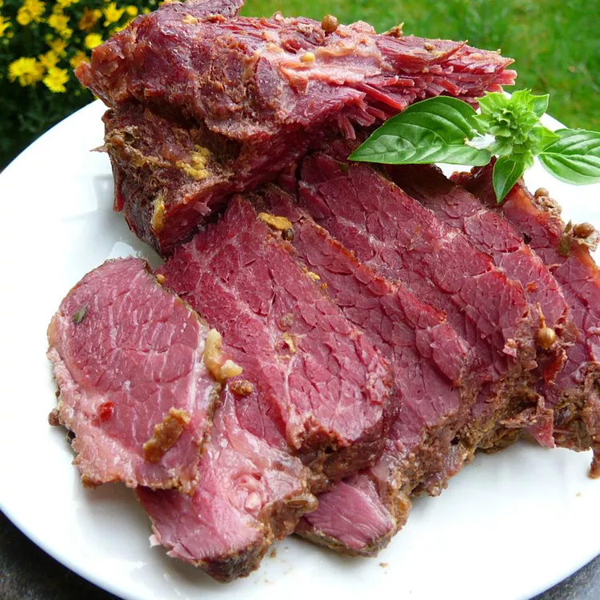

No St. Patrick's Day is complete without corned beef
It's as much of an Irish tradition as wearing green!
If the hands-off cooking methods and fall-apart tender meat doesn't make corned beef an annual tradition at your house,
we don't know what will!
Ingredients
- 1 (3 pound) corned beef brisket with spice packet
- 10 small red potatoes
- 5 medium carrots
- 1 large head cabbage
Directions
- Place corned beef in a Dutch oven and cover with water. Add spice packet, cover, and bring to a boil. Reduce heat and
simmer until corned beef is just about fork-tender, about 2 hours.
- While the corned beef is simmering, cut potatoes in half. Peel carrots and cut into 3-inch pieces. Cut cabbage into
small wedges.
- When corned beef has cooked for 2 hours, add potatoes and carrots; cook until vegetables are almost tender and meat is
fork-tender, about 10 minutes. Add cabbage and cook until tender, about 15 more minutes.
- Remove meat and let rest for 15 minutes. Leave broth and vegetables in the Dutch oven.Slice meat across the grain. Serve
with vegetables and broth.
Cooking Tip
Total cook time for corned beef to be fork-tender should be between 45 and 50 minutes per pound. Please adjust if your
corned beef is larger or smaller than 3 pounds.